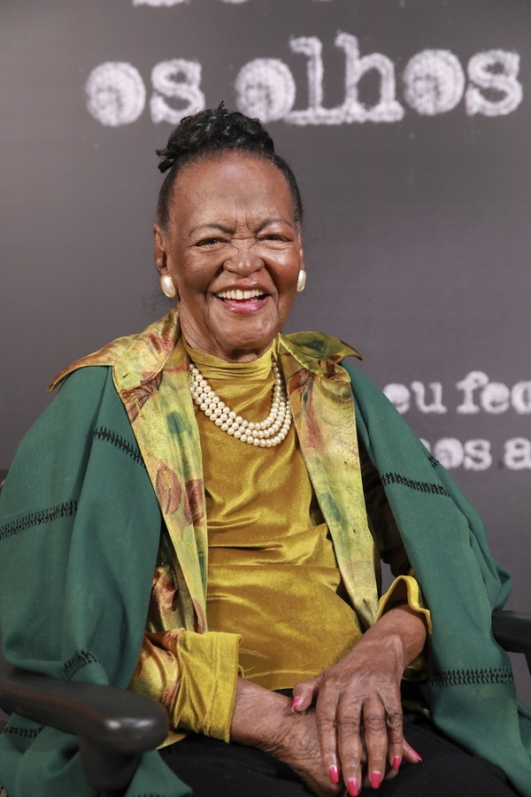

Ruth Souza
Ruth Souza foi uma atris brasileira , considerada uma damas da dramaturgia brasileira e a primeira grande referencida para artistas negros na televisao por seus papeis notaveis;nacida dia 12 maio 1921 rio de janeiro.falecimento 28 de julho de 2019